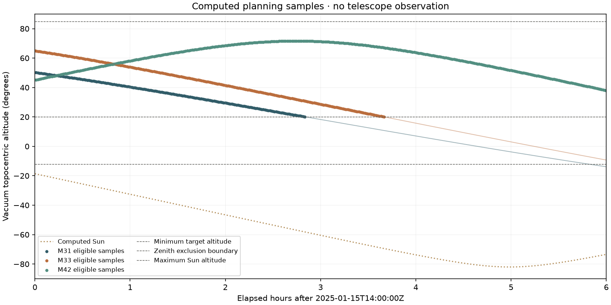
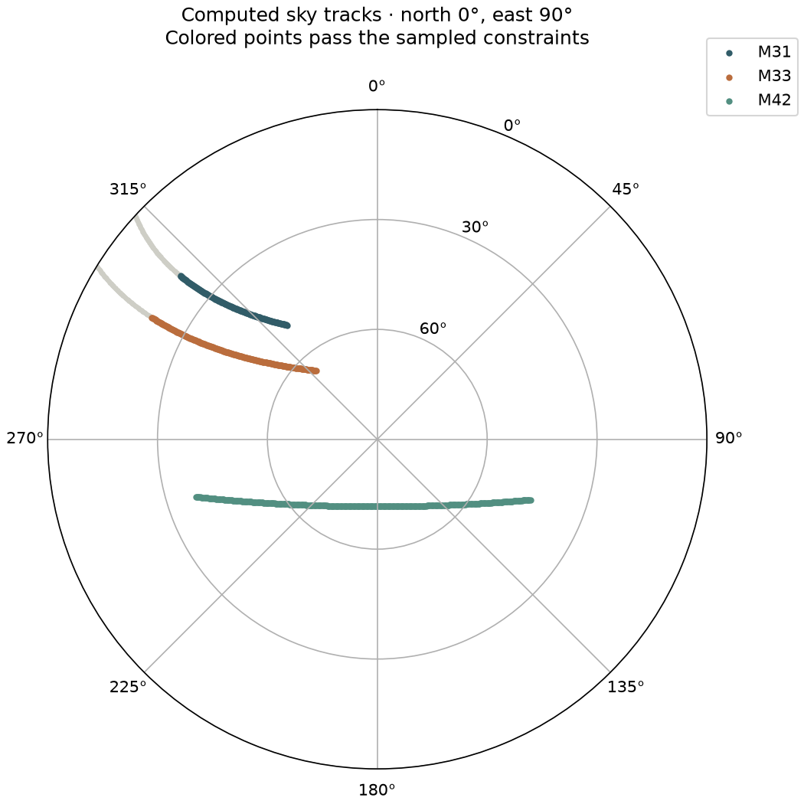
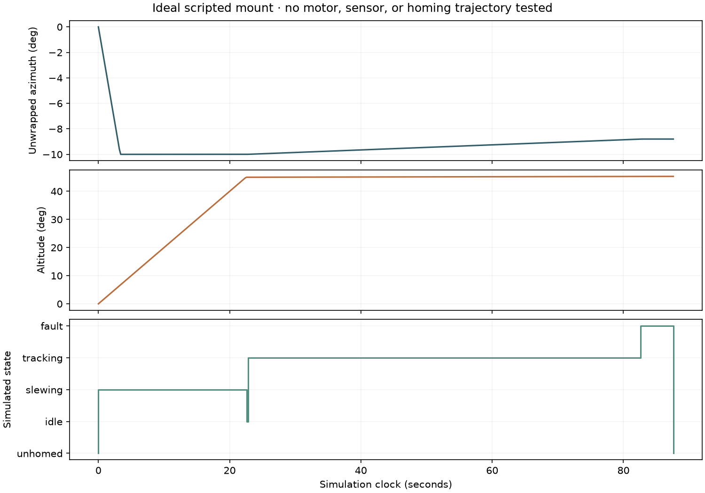

ROBOTIC TELESCOPE / OFFLINE PLANNING + IDEAL SIMULATION
Pointing, before hardware.
No hardware operation or physical pointing accuracy has been verified. Computed sky positions and an ideal mount model are separate evidence. No telescope observation is represented here.
UTC start: 2025-01-15T14:00:00Z. WGS84 observer: 12.9716° latitude, 77.5946° east longitude, 920 m assumed height. Pressure 0 hPa; no refraction.
| Target | Eligible / samples | Adjacent eligible span | Maximum eligible altitude |
|---|---|---|---|
| M31 | 171 / 361 | 170.0 min | 50.29° |
| M33 | 221 / 361 | 220.0 min | 64.98° |
| M42 | 361 / 361 | 360.0 min | 71.66° |
Span counts adjacent eligible samples, not points × step. It is a sampled estimate, not a guaranteed continuous observing window.
Bundled IERS data: 361 observed / 0 predicted UT1 samples. Unsupported Earth-orientation times are rejected.


Ideal mount state and motion
443 state records; 87.6 simulated seconds. Maximum clock-step rates: azimuth 3.000°/s, altitude 2.000°/s. Fault position frozen: True. Clearing the fault returns to unhomed.
Home is a declaration of a known zero; it is not a simulated physical homing move. This scripted motion is separate from the astronomical tracks and does not establish tracking accuracy.

Frames, constraints, and limits
Fixed ICRS directions transform to vacuum topocentric AltAz at the stated UTC/location, with bundled Earth-rotation data. Azimuth is north 0° / east 90°. No refraction, proper motion, distance/parallax, local terrain, weather, moonlight, field rotation, real alignment, or motor dynamics are validated.
The solar-separation rule checks target samples only. It does not certify a safe slew path or eye/equipment protection. Do not connect this simulator to a telescope or use it to point at/near the Sun.
Source SHA256: 55d060faa137be8e5535534c953bb4b3ce5685165e0117a6629cd5bb768865f6. No external map, name resolution, telemetry, or data download is used.
Metrics and provenance · Request and assumptions
October 2026 implementation. Physical assembly, calibration, and supervised tests remain pending.